Somain 2009

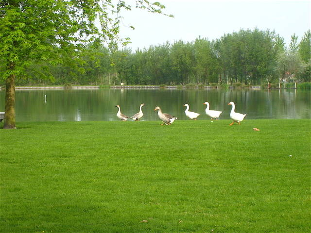
Somain, c'est près de Douai, si vous ne connaissez pas. Ca se tient dans un grand parc avec un vaste étang qui accueille toute une faune, canards, oies, etc...

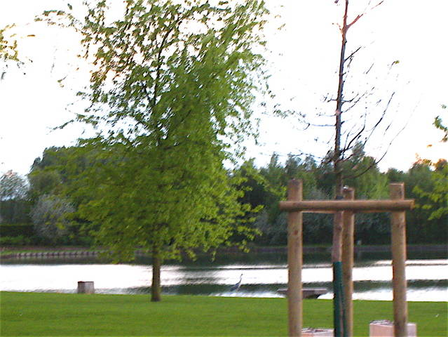
Il y a même des hérons, mais ils sont assez farouches, et s'envolent en silence, mais de loin, dès qu'ils nous voient.

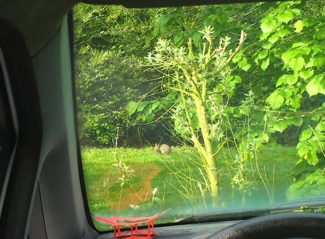
Au milieu du parc, 2 collines buissonneuses abritent des myriades de lapins qui ressortent le soir quand tout le monde s'en va, et viennent se renseigner sur mon fourgon...

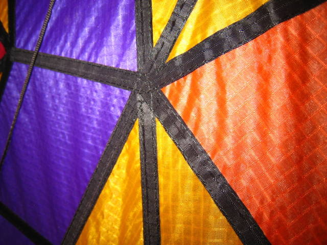
Dans les stands, un Allemand (l'invité d'honneur est l'Allemagne, cette année) expose des cerfs-volants à la couture parfaite, et au dessin très scientifique de parquets non-périodiques (inspirés de Jean-Paul Delahaye dans Pour La Science ?)...

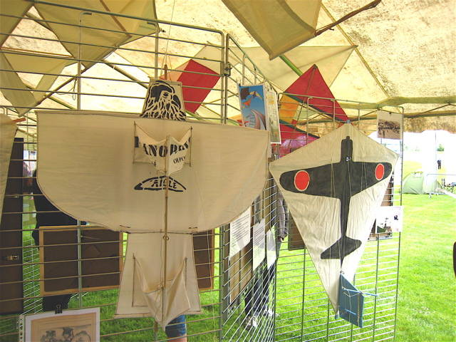
Dominique Cotard est venu de Soissons exposer des Bambous-Cotons historiques, comme cet avion-cible pilotable (le premier pilotable ?) pour l'entraînement au tir contre avions de la Marine US !

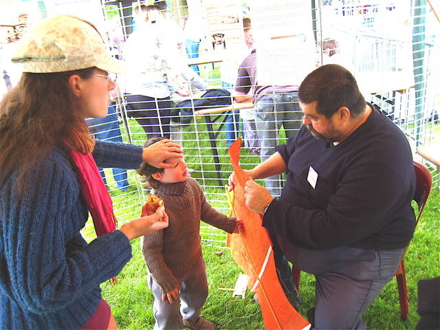
Il est tout heureux, car une dame vient lui montrer un cerf-volant Hirondelle acheté dans une brocante pour son côté écolo, et à la toile en très bon état... Avec quelques bouts de baguettes et un peu de réglage, il volera, la dame le veut (Dominique n'aurait pas osé !). Mais la dame était inquiète qu'on le modifie et son fils plus encore !

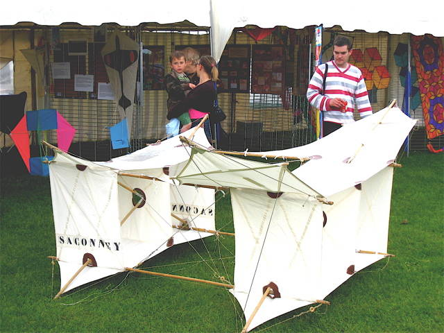
Il a aussi apporté une reconstitution de Saconney. Il a encore récemment changé les tendeurs pour des ficelles plus proches de celles d'origine...

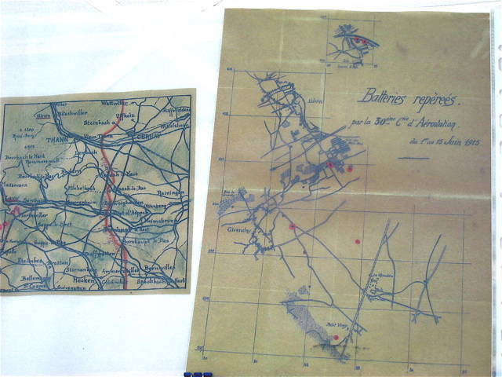
Il a pu se procurer des reproductions des relevés effectués à partir des ascensions humaines portées par cerfs-volants Saconneys...

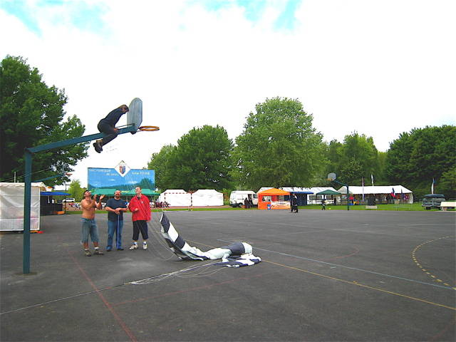
Sur le terrain, les Nasas se défoulent et font de l'initiation. Mais tout le monde n'est pas aussi adroit que les Pirates ou les Gwenn-Ha-Du... Heureusement, Michel est très fort pour monter aux poteaux et décroche le total !

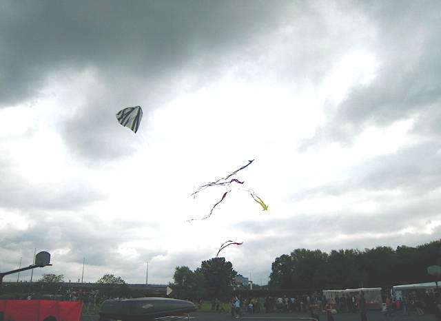
Le vent est plus que fantaisiste, mais enfin, il y en a, pour le moment du moins. Les Foly-angs de Vent de Folie n'ont pas besoin de ça pour s'agiter en choeur !

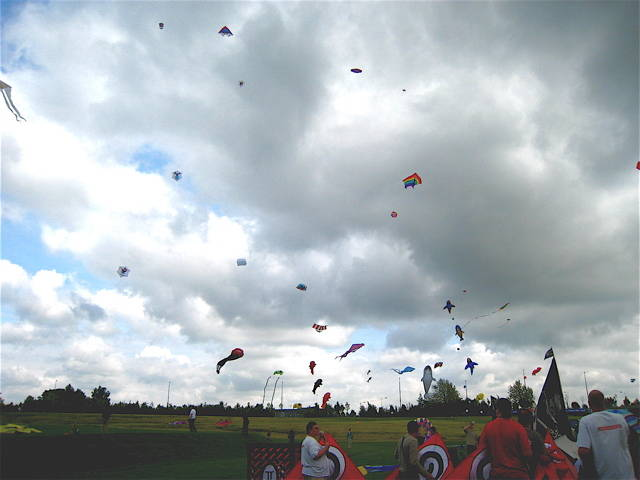
Malgré le vent difficile, il finit par y avoir pas mal de monde en l'air, sous un ciel qui laisse voir pas mal de bleu, c'est bien agréable...

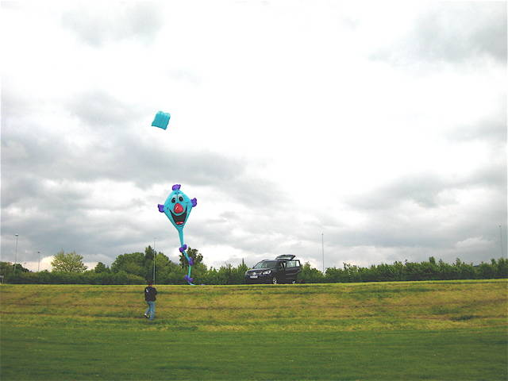
Les Allemands ont monté une voiture comme ancrage et sortent leur "cerf-volant" primé en Allemagne : une sorte de Eddy-sucette de 15 m de long !

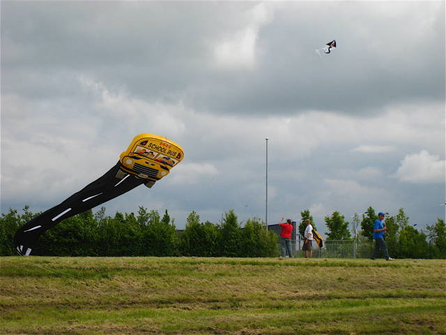
Ils sortent aussi un bus scolaire, et la route qui va avec ! Il volera assez longtemps en fluctuant un peu, mais sans jamais tomber...

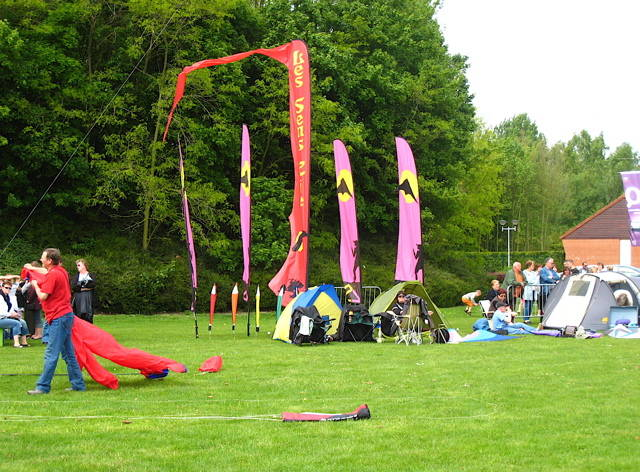
Les Sens Ciel ont aussi monté leur petit camp et sortiront du gros !

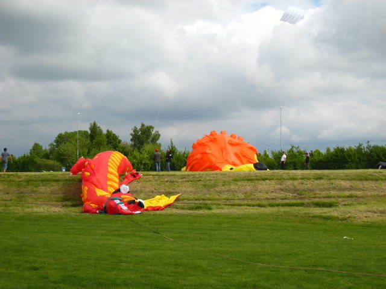
Le Dragon est encore un peu mou, mais il va quand même finir par voler, pas très longtemps dans ce vent difficile et faible à basse altitude, masqué par les arbres...

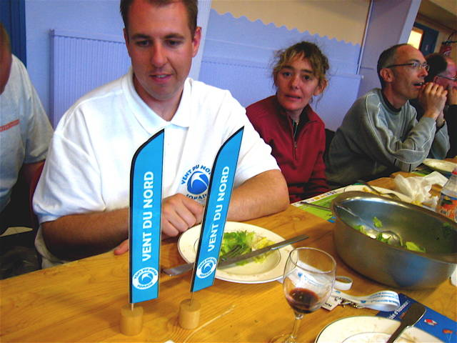
Repas du samedi soir à la salle en ville. Un admirateur a réalisé pour Fabian de belles bannières siglées Vent du Nord...

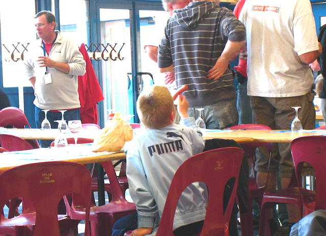
Les enfants commencent avant, et le dîner sera très bien, avec bien sûr jets d'avions en papier à travers la salle, à partir des splendides sets de table spécialement imprimés pour la rencontre !

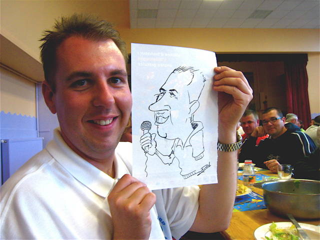
Jean-Paul (président des Sens Ciel) a entre autres, un don pour le dessin, et il a caricaturé Fabian de manière très ressemblante...

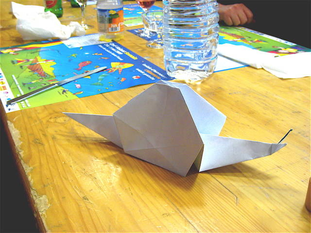
Il est aussi fort en pliage et il a réalisé ce très bel escargot en échange de mon petit chien que j'avais appris de Minoli !

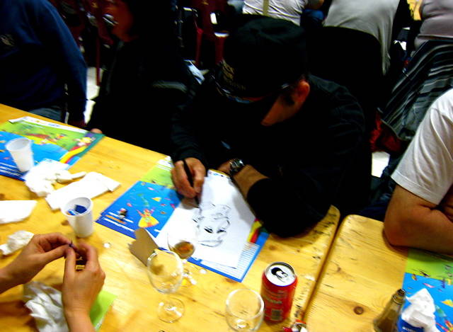
Pour les portraits, il ne va pas arrêter de la soirée, utilisant tous les sets disponibles pour son coup de crayon magique...

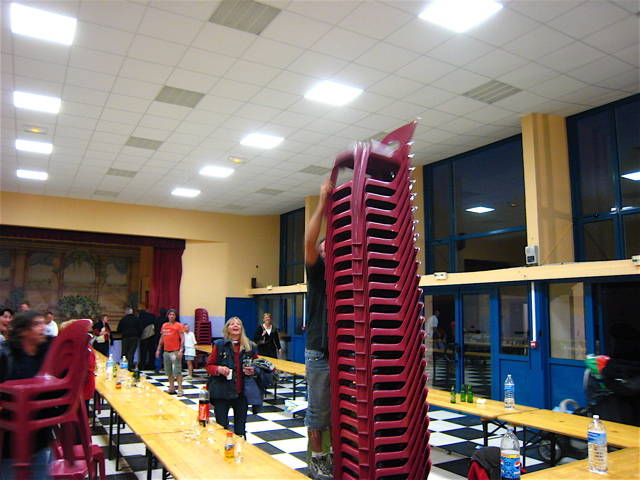
Fin de séance, il faut ranger. William se charge d'empiler les chaises, mais à sa manière exubérante...

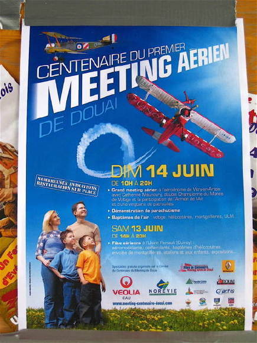
Pour info, une affiche pour la rencontre "début de l'aviation", le 14 juin sur l'aérodrome d'époque voisin, un centenaire, ce qui est rare pour un meeting !

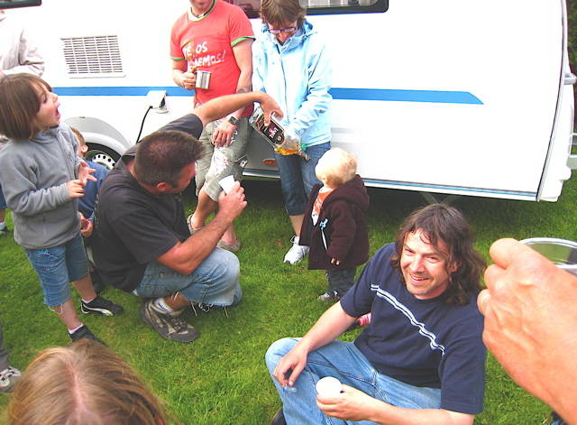
Dès le matin, les Gwenn-Ha-Du commencent l'éducation des enfants....

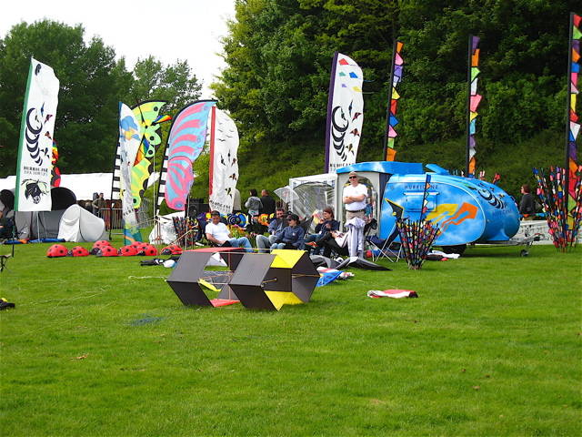
Les Hurricane et leur splendide remorque sont arrivés et ont étalé tout leur matériel ludique. Ils mettront beaucoup de deltas en l'air...

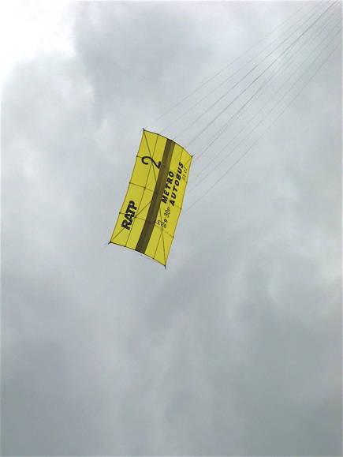
Ils feront voler aussi le ticket de métro inauguré à Vierzon, grand EDO de presque 3 mètres !

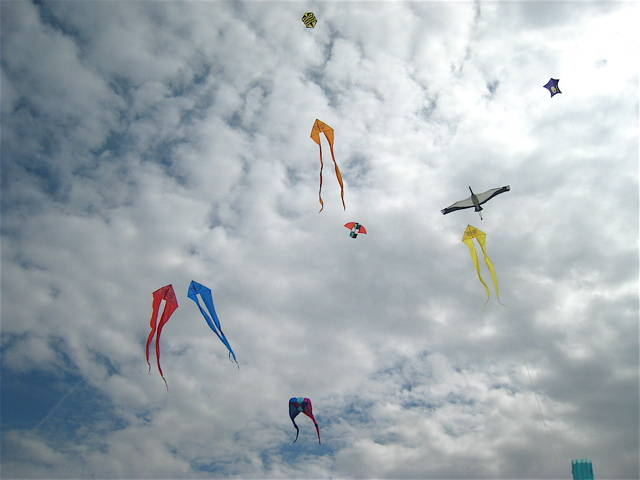
Le vent est suffisamment fort, mais très turbulent derrière les arbres, et même bien au-dessus. Je monte ma grue dans les tourbillons, je ne me ferai couper qu'une fois !

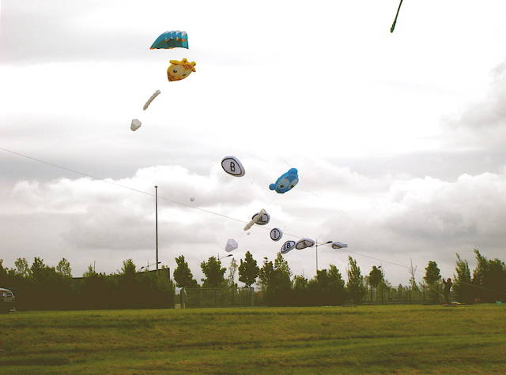
Les flow-forms tiennent en l'air des ornements gonflables très variés, comme ces plaques de nationalités diverses...

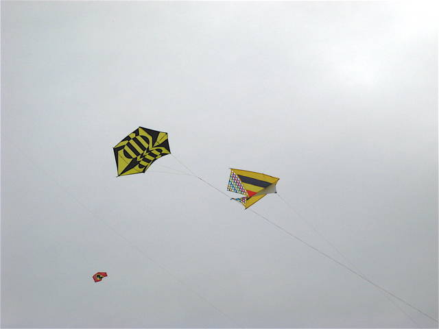
Vent de Folie a, entre autres, sorti son Rokkaku jaune et noir au dessin complexe !

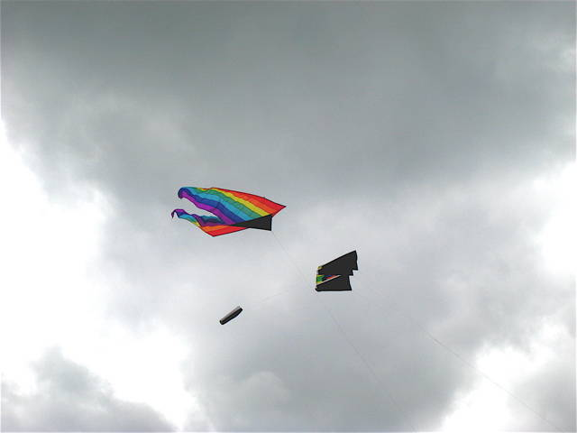
Ce curieux delta en bandes de couleurs se prolongeant en queues est de M. Vansnickt...

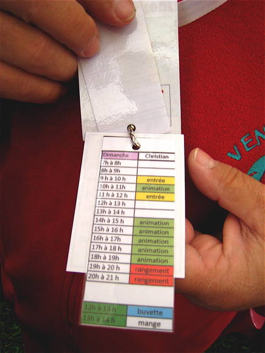
A l'heure indiquée sur le Pass, déjeuner-plateau sous la tente... Christian nous montre son rollet, minutieusement détaillé par l'organisation.

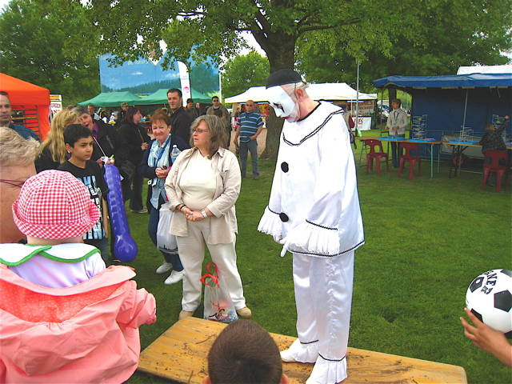
Le lâcher de bonbons, problématique avec ce vent, est remplacé par une distribution de Babeluts par un automate bien connu !

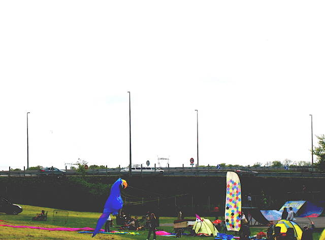
Sur le toboggan autoroutier passe en klaxonnant une noce, dotée de 2 limousines ultra-longues, on n'est pas regardant pour faire la fête dans le coin !

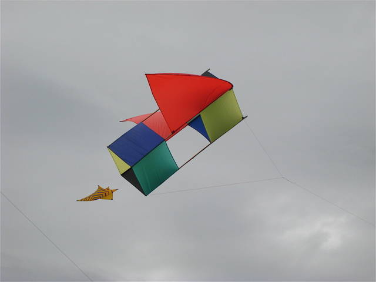
Un beau Roi des Airs montrera ses qualités dans ces conditions difficiles par une stabilité à toute épreuve...

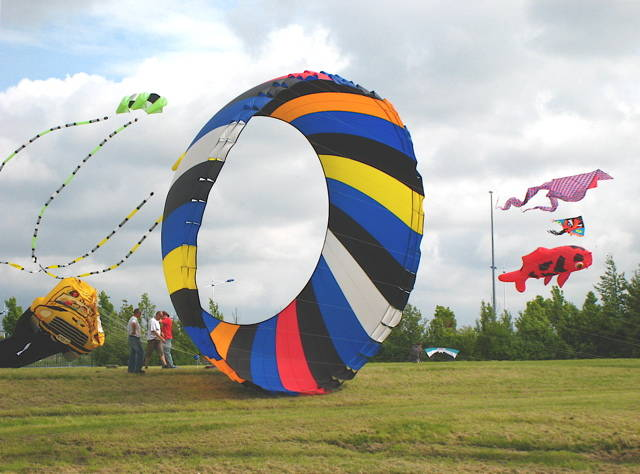
Les Allemands sortent un énorme bol de 9 m...

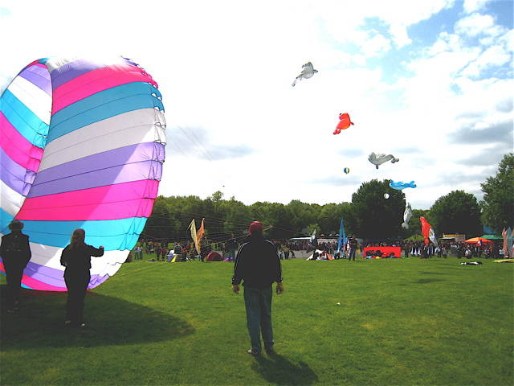
Pour ne pas être en reste, Vent de Folie sort le sien, de 8 m... seulement. Masqué par les arbres, il se gonfle quand même, mais Olivier Couratier peut le tenir à la main, et le regonfler quand il menace de s'effondrer...

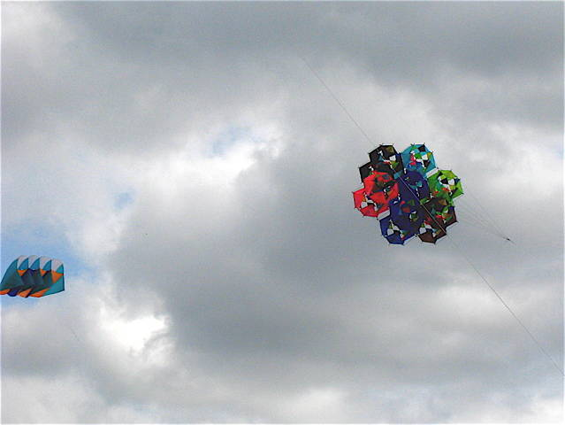
Ce beau multi-cellulaire volera quelques instants, mais la structure est évidemment un peu lourde pour ce vent !

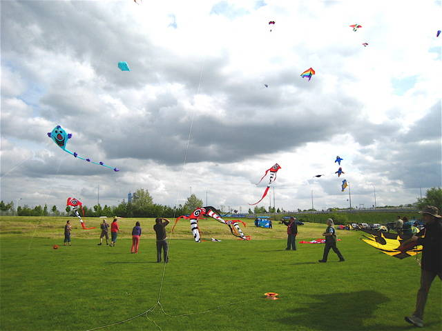
De même, un envol groupé de deltas à queues a avorté plus que rapidement, dès le décollage pourtant bien préparé ! Mais derrière les arbres, le rouleau inverse par moments le vent au sol !

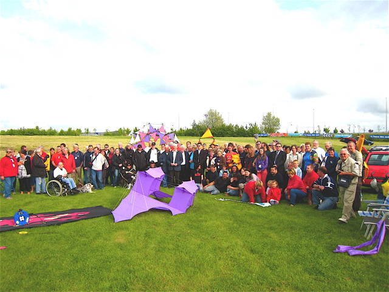
Avant que tout le monde ne se quitte, la traditionnelle photo de groupe !

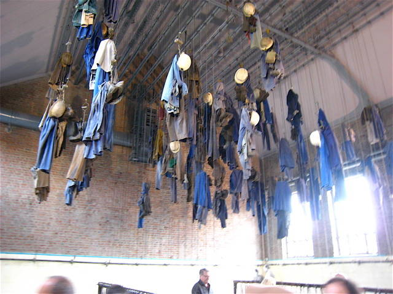
Dimanche soir, je dors encore dans le Parc, avec les lapins... Puis direction Lewarde (prononcer "Leu-ouarde) à 10 km pour une visite de la mine de charbon-musée. D'abord du classique : la "Salle des Pendus" avec les "loques de fond" des mineurs et les douches tout autour.

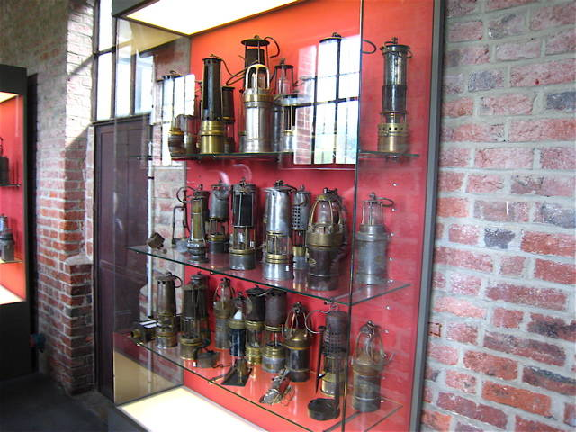
Puis la lampisterie avec les générations sans cesse améliorées de lampes, à flamme nue, puis cachée, puis électriques, et les bancs de recharge.

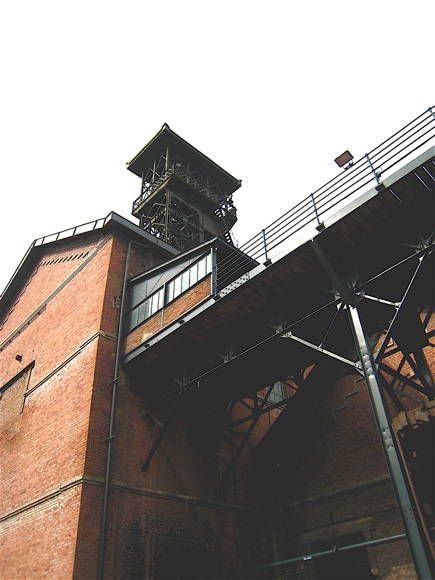
Enfin direction le chevalement qui coiffe l'un des deux puits et commande l'ascenseur. Il y a toujours deux puits pour assurer l'aération, et prévenir les pannes...

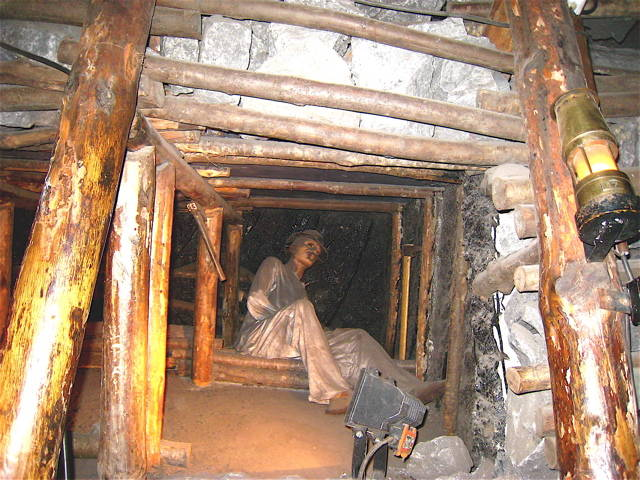
L'ascenseur nous descend (je ne vous dis pas tout...) dans une galerie de liaison, une "bowette", avec voie ferrée et divers appareils...

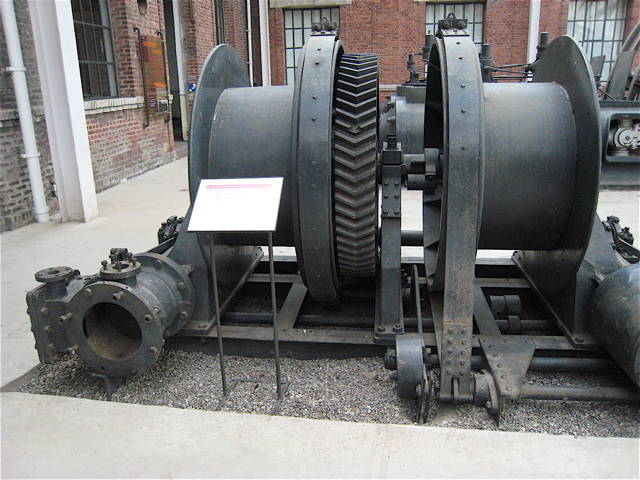
A la sortie, des salles en visite libre, d'historique et d'explications plus techniques. Dans la cour, diverses machines, treuils, ventilateurs, alternateurs de tailles respectables...

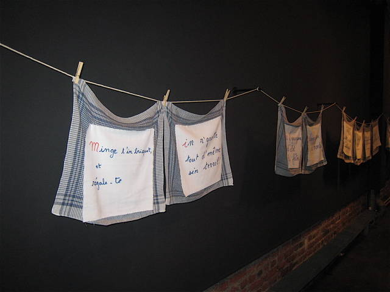
Le parler ch'ti du Nord est humoristiquement illustré sur mouchoirs à carreaux dans les couloirs du musée !

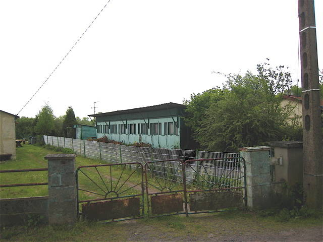
Ensuite, je reprends la route. Pas loin, une originale maison de campagne au bord d'un lac...

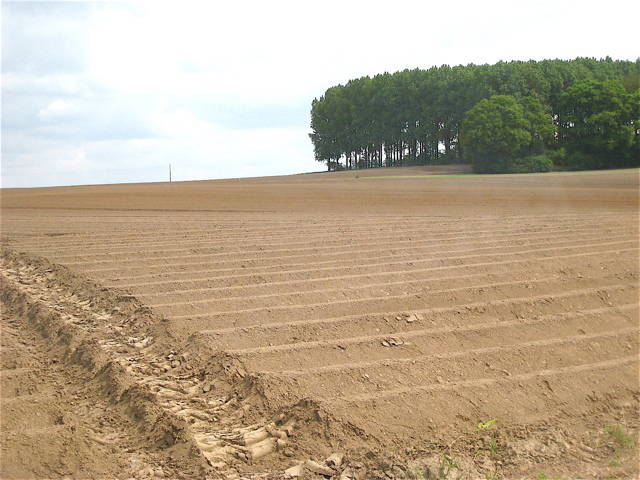
Et puis des champs à l'aspect plutôt inhabituel, j'ai d'abord pensé que c'était pour les endives, dont il existe de nombreux producteurs dans la région, mais on m'a signalé que c'était simplement pour des patates...
Somain 2009 : Les conditions aérologiques y sont toujours un peu difficiles pour la surface, mais ça ne doit pas faire peur à de vrais cervolistes ! Et puis le parc est très beau et l'accueil très sympathique. Merci à tous!